Creating Live2D Model
29th August 2022
A random surge of inspiration struck me and I decided to spend that energy to create a VTuber model. I started the project on 21st of August and finished it in 7 days with well over 30 hours of manpower.
In this article, we will be covering my 7 days worth of grind journey, my first impression in this work line, and reviewing the whole experience.
Note: The Live2D Model and its source file I made in this project is available for you to download below! Alternatively, go to "More - Files" for more details.
Table of Contents
Pre-Production
I have yet dipped into VTuber avatar creation at the time, so it's important for me to do a research about it. I searched the generally used program, its alternative (if exist), and how to do it, preferably a manual.
To sum it up, I need a model with pretty much all their parts separated into a layer sprite. PSD file only, apparently. Then rig it into a finished product. Sounds simple, but it actually is pretty simple. It depends on the scope of the product.
For drawing the model, I'll just use my trusty Krita, which then I can convert it into a PSD file. As for the rig, I think I'm locked with Live2D Cubism. I'm not going use the pro trial and will instead go with the free version. Finally, to test the model, I can use built-in viewer in Live2D or use separate program for the camera tracking, I found Vtube Studio and PrprLive, I used the latter but couldn't really write anything valuable about it.
In this project, I'm using a free sample from Live2D website, Hiyori Momose (illustrated by Kani Biimu and modelled by Live2D), to reference off the technical details.
Designing and Drawing a Character
When it comes to character design, creating a concept art, at minimum, is a must. This is to liquify the later process into a much more constructed activity rather than fumbling around in a hedge maze. It doesn't have to be fancy. A simple sketch will help you along the way.
I surfed the web for an hour and still wasn't really sure what to create. I'm looking for something that is friendly to make a layer part of, easily detachable, and preferably simple enough to "animate", which I assume what rigging is similar to.
I ended up using my mascot, Illith, for the base design and attached a android body into her. Which was pretty easy to rig later on, I found out.
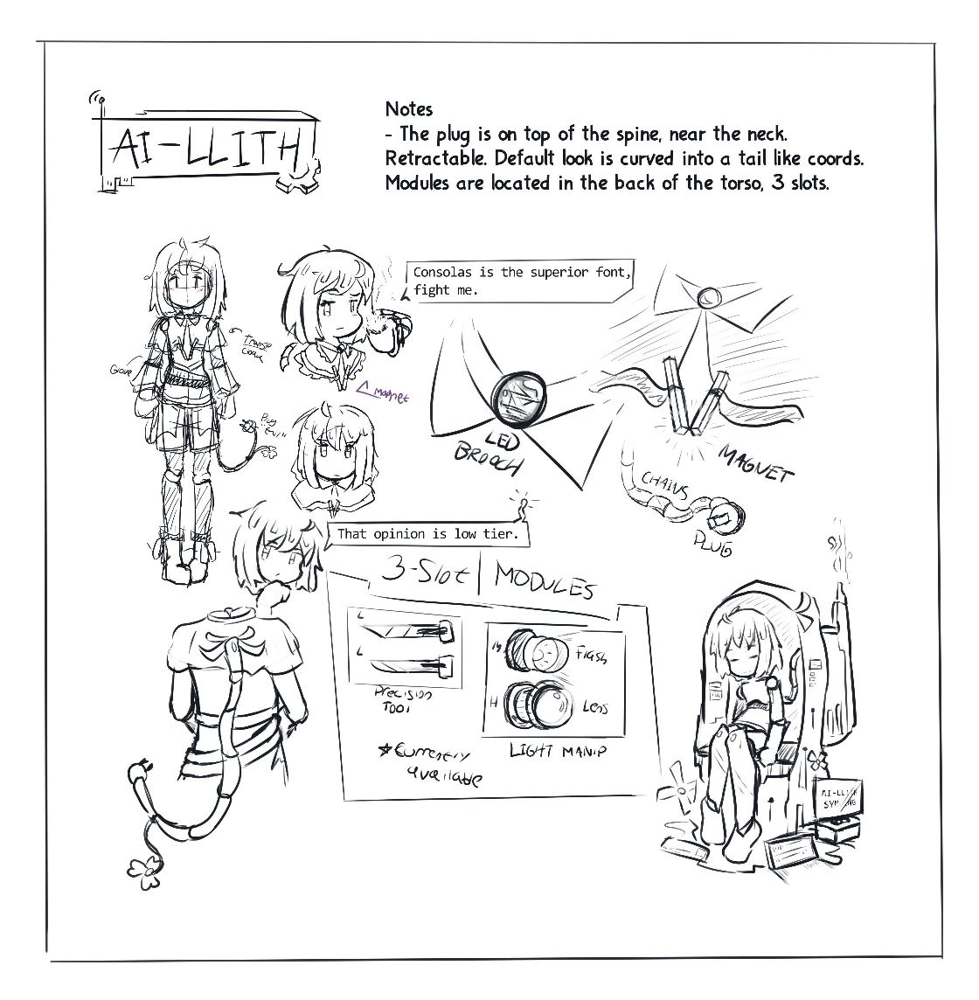When the accessory eat 50% of the canvas
Design Concept Text
In summary, the character is a humanoid android with an "AI" of Illith, a sassy anime archetype girl, lol. It's made by a "group" of individuals who were not very wealthy and used whatever they have to finish the project. How they make the AI or the mainframe is anybody guess. Maybe they 3D printed the body, maybe they actually have an AI somewhere that can speak and understand human, only your imagination know the answer.
One thing to say about the concept is, wow, why did I decided on android character. I barely able to draw curvy chest and here I am having to finish a body made out of metallic frame.
Discounting my inexperience of drawing shiny metals, there's no difficulty on the drawing process. I did double down with the metal and strip her naked (wow phrasing) and made an improv of the design here and there, mainly the "tail" but here it is!
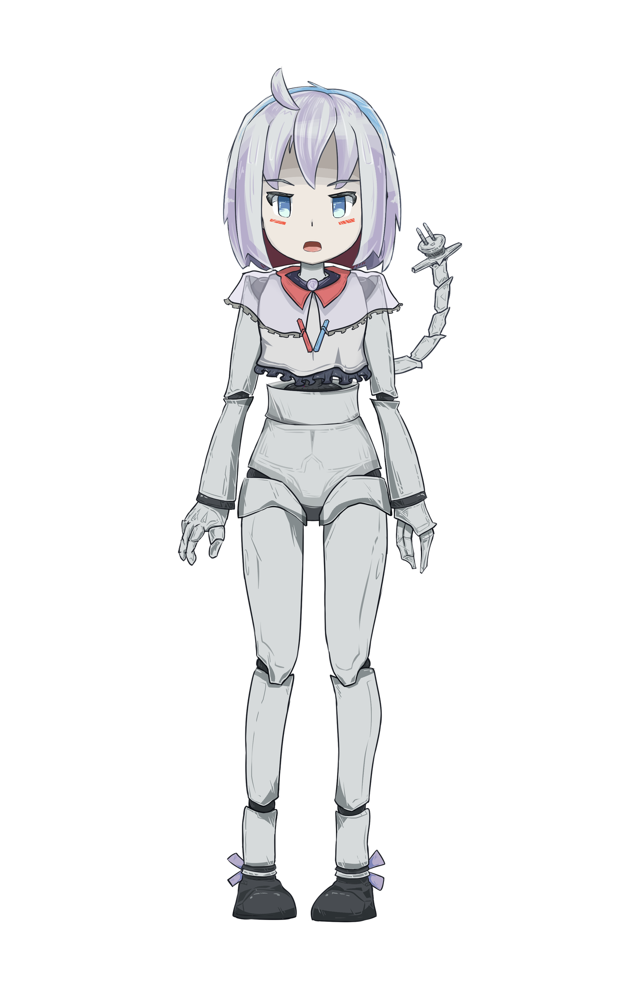Final Version
Sketch Version
A bunch of ideas in the concept art were modified and didn't make it to the final product, mainly because I wasn't sure if I can even do it with our set of restriction in Live2D. Notably about whether I could layer cloth on top of something else easily or not; and toggling them on and off in the end result.
Unique thing about the process over creating art sheet normally is that you must separate the parts into bazillion of layers. The free Live2D has a softcap of 100 layers so I was mindfull of that. At first, I was worried that I could hit the limit because the sample has ~90 layers but in reality it is overengineered and I ended up only with ~75 layers.
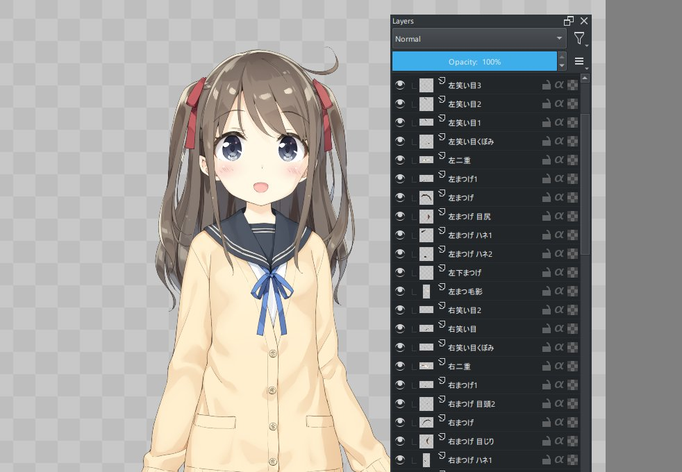Layers galore
With strong foundation and standard I have, I at least try to keep up and put extra effort to label all my folder with icon emoji accordingly. Which ended up being useless later (the icon) because Live2D font family doesn't have the unicode for it. Haha..
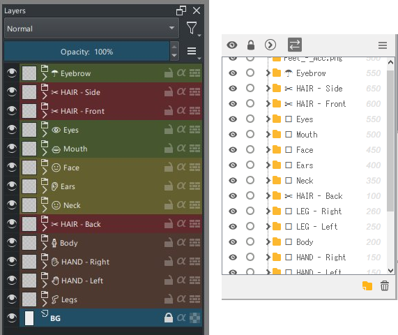Pain.exe
Playing Around With Live2D Cubism
I braced myself and start climbing up the stair toward the hall I intentionally, yet unknowingly signed up for. step after step, the soft collision of my shoes echoed through the narrow hall around the absence of my mind. Upon reaching the peak, I was presented, with splendor... a java-based rigging software. There's a lot to cover in this regard later in review section. But right now, We'll be covering my attempt at figuring out this bad boy on.
I imported my model.psd file into a new project, while also having the sample file open. Just so I can play around with both raw and cooked cast simultaneously. Really good method to see the difference between the two. I will be focusing on the sample here.
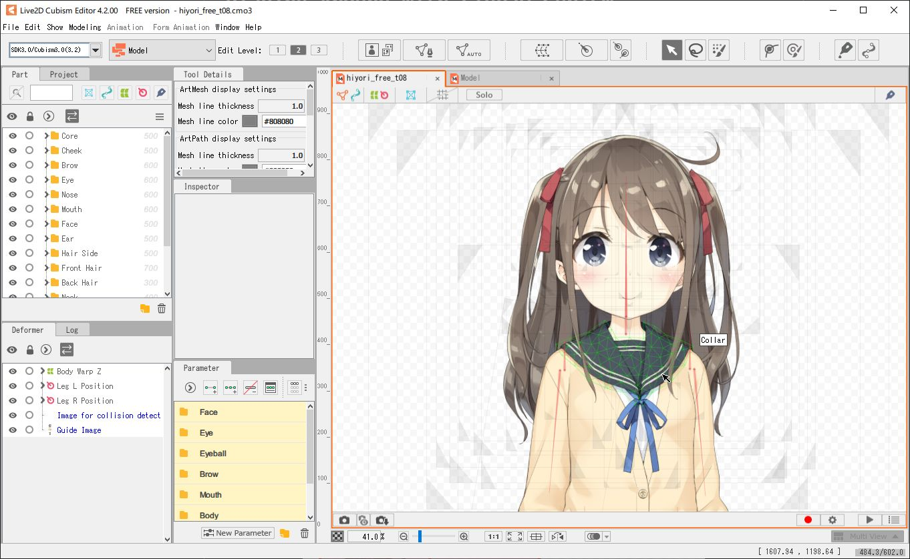Live2D with Sample File
Right off the bat, I see triangles when I hover on the parts. If you ever do 3D modelling, this is pretty much the "edge" on a texture. It's powerful, laggy if overdone, and it's what made 3D look possible. The auto mesh generator tool is actually pretty smart, this will definitely save huge chunk of time for me to set up the less important process, zoning the outer vertices for example.
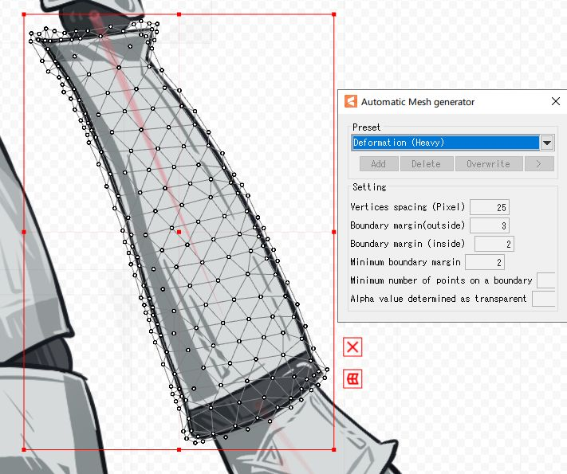You shouldn't have this many vertices
Next big thing that catches the eye is this square thingie outside the area of a part. Click and dragging it doesn't do anything which was unexpected. To invoke this magic square, what you have to do is to simply click the edge-outer triangle edge. So.. it's THE perspective transform tool then? Messing around with it I noticed the selection on bottom left under "Deformer" tab changed each time I click on different part. Deformer tool it is, then. It has 50 slot limit and that sounds plenty allright.
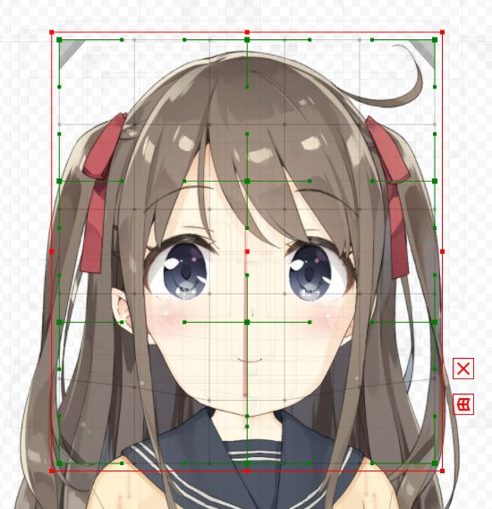Behold, technology!
Upon closer inspection while trying to solve a deja vu moment, apparently the deformer isn't limited to deformer group, but also the individual parts. It confuses me for a second but it kinda make sense. One is applicable to a group while the other one is specific to an individual. Think of it like final damage amplification versus attack modifier in a game, related and seemingly the same, but are completely different variable in the end.
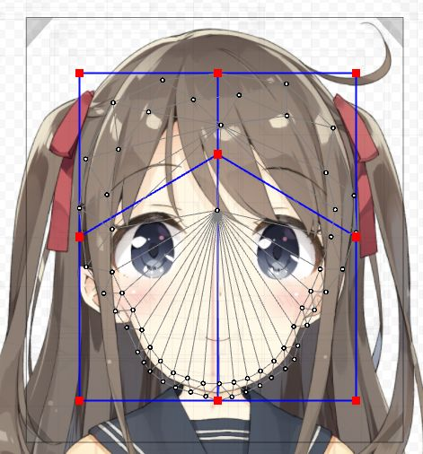I heard you like deforming your deform
With each complicated software, comes in a complex managing system. Let them introduce us to file name and IDs! There's also layer priority, layer masking (using ID), and other bunch of useful tool here that I won't be using.
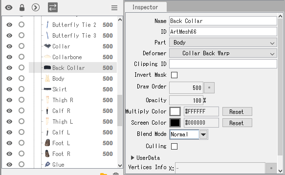Great tool for team project
Time to address another elephant in the room that I kinda ignored because it constantly bark its yellow into my face, the parameter tab. I clicked one of the folder before and decided to save it for last. Lo and behold, the KEYFRAME. Oh lawd we're gonna be busy with this tab ain't we? I dragged the parameter around and voila, something moved! Yep, we're gonna be busy here. Gotta emphasize that.
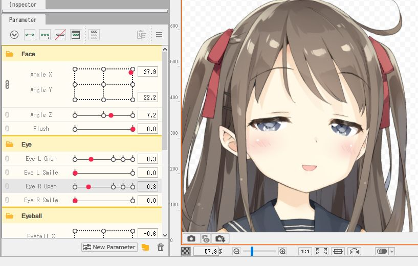"I see you are at your limit, heh."
There were a couple of relevant findings which doesn't really need too much explaining, that being; Rotation Deformer (basically rotate only transform tool), Tool Details, Right Click Context Menu, etc.
I guess that's it for this section. There's only so much you can do when starting from finish line. Here's a list of what I do not know its purpose (beside the obvious naming convention.) There might be more, but these are the noticable one to me.
- Physic Blending setting under Modelling toolbar. This one I understand how it work, but not sure how to set it up.
- "Image for collision detection" inside the Core folder of Part tab. It stands there, menacingly.
- Edit Glue tool, what it does and how you apply glue is a mystery to me.
- Skinning under Modelling toolbar.
- Artpath. Literally who?
- Brush is what you call an anomaly if it's not in a drawing software. It's the same case here.
- Edit level. I read and tried it. Still have no idea what's the significance of it, keeping at 2.
- Animation and Form Animation. Feels irrelevant for now so I didn't bother.
- "Open Purchase Page" under Help toolbar. Wait, you have to pay subscription fee for this-
Working Around With Live2D Cubism
With decently loaded ammunition of knowledge, we carefully aim into our goal, and fire off the fuse with a bang! It's not a perfect shot right now, but repetition will improve the accuracy, precision, and speed.
In this line of work, we're looking for speed because oh boy you don't want to get stuck in a short-term project for more than 48 hours.
Setting up the Infrastructure
First thing I did was spamming auto mesh generator on every single parts, with little to no edit. Only when the mesh get too much. It's extremely messy overall but right now I'm not gonna bother optimizing it. Then, I soon found out that a couple of my layer has a stray pixel outside the bounding box, oops. Had to fix and re-export the broken layer. Quite easy to do, just drag and drop the .PNGs.
A few of the layers require unique mesh (based on the sample), notably the face skin, things with edge that need to have detailed animation (front hair), object with physics (tend to be simpler with 3 main vertices). Did I adjust any of that? Absolutely not, at least not everything, only the face and hair, lol. It's not gonna be performant, but I didn't care. Oh, during this I found out how to glue two vertices! It's in the tool tab!
Next up is setting the layer priority. I ordered it based on my original art layer for now, simple. While I'm at it, I assigned IDs to mainly the head layers. I think it'll be useful later. I did ignore the rest of the body part though, else I'm going to waste too much time.
It's Deforming time! For now I treat it as a "folder for quick transform tool" since that's pretty much what it is anyway. I'll definitely stack this one up more later since that's how the sample do their job.
I didn't bother with Parameter folder. Seems unnecessary since grouping 2-3 parameters is just adding clutter. And I ain't gonna add much more of those, the limit is 30 and it's already at 27 base.
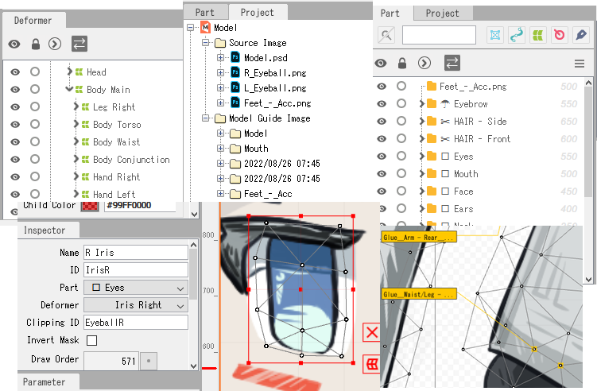All in one summary
The Work of Parameter
Now comes the part where I don't know how to structurize and write because I didn't really write anything about the process in the journal. You know, having a bit too much investment trying to rig the thing. Tangent aside, I'll recap what I did instead.
Starting with the most important yet the cheapest way to bring your work to live, the eyes. I grouped (deform folder) the eye lash together with the eyeball, separating the iris. The iris is set to clip into the eyeball just so we don't have to worry clipping the iris out of bound.
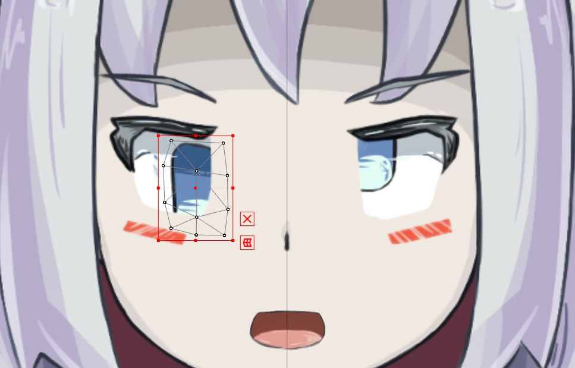AeeUeghH
Not sure how the parameter worked yet so I played around a bit. Quite simple if you have touched animation before, like bouncing ball in After Effect. I set up the Eyeball X and Y. After I'm done with it, I think I'm supposed to link the two together so we can animate the in-between of X and Y.
I was wondering on how you animate the eye closing animation and I thought it's gonna be elaborate, which is kinda true if you think about it, but well you just squish the parts and overlap them on each other. So this is why you should over-extend your part with skin color since you can easily hide stuff with it. This method is especially true for the mouth I assume.
It's okay
With that done, guess what I did next? Hair animation. But wait, it's not just the hair, I also did the head deformation at the same time because I don't know what I'm doing. I couldn't really imagine how the hair move if the head is static. This ended up being... an all right move? Because this mean I can work with the mouth in all angles immediately. Not sure, feels backward honestly but here I am.
I grouped the whole face layer then separate it into X+Y and Z deformer. I proceed to animate the X Y face. Just warping it until it look decent enough, nothing fancy. The Z rotation is pretty simple, just rotate 30 degree-ish.
After that, I worked on the hair with gravity and perspective in mind. If she looks up, back hair went down. Look down, move it up. Tilting, rotate the side hair and deform the rest, etc.
At this point I was wondering on how you make the hair bounces around when you move the head (in physic tab). Apparently there's a specific parameter for it. Set it up and you can let the program do the magic. Ahh, so it's simpler than I thought. I did that and now there's more deformer group than ever. Starting to worry about that deformer limit, not gonna lie.
Twirlll
Hey proofreader, I wonder why the neck is animated already, and the mouth is closed?? Whose the potato that didn't record the progress? I, uh, let's not talk about it. What we can talk about, though, letting our character here able to speak!
This one is similar to animating the eye lash. One mistake I had here is that I made the skin texture a little bit too less. This make it trickier to hide the oral texture effectively. I could have edited the texture but no, I was too stubborn and decided to deform the whole thing manually lol. I managed to create 2 keyframe, normal and slight smile.
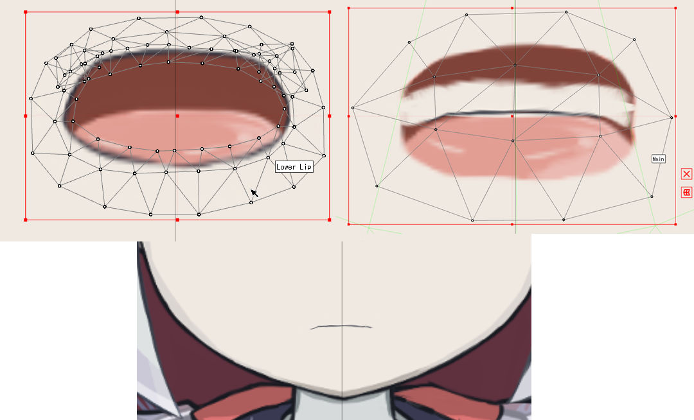"Wait, it's all 2D?"
With that, I'm pretty much finished with the head. Now then, for the rest of the activity, I noticed the process is more or less the same like what I did with the head. So we will not cover these as it get repetitive explaining the same stuff.
Notable difference is that I set the "breath" (idle pose) parameter only to the tail, because well, computer doesn't breath like human do. Other physic parameter is merged together with the one for the hair due to the 30 limit. I accounted the modular body and animate it accordingly, see below.
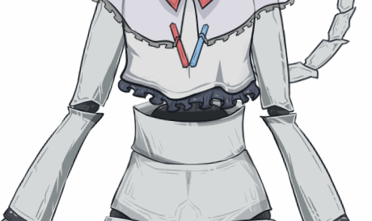Hmm perspective
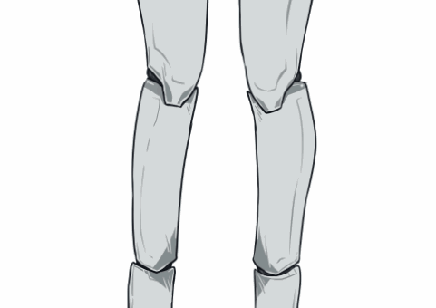Mechanical parts
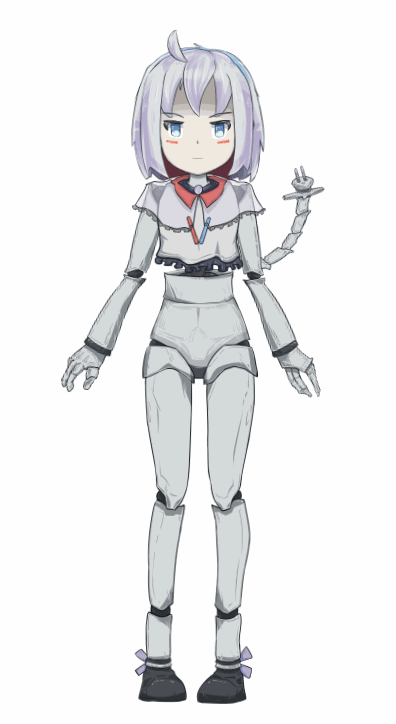Full preview
Review
All right. What do I think about fullbody Live2D creation? It's quite a technical feat in my opinion. It used to be sparse, barely anyone developed it. Once the 2D VTuber boom happened in like what, 2020? Everything is now incentivized to be Live2D. It extend to game, visual novel, and heck, company mascot out of all things into this wave.
The whole process taking 7 days, even for a lazy model is quite an eye-opening. No wonder people out there put a high price tag for this genre. With these requiring communication, cross-checking, and quality insurance; my respect to you solo rigger out there who have like two weeks deadline for a single project/commission.
As for my model, I'm not satisfied with my result here, of course. I liked the face, but that's about it. I didn't do the mesh like I would normally should do. I skipped out the clothing (but to be fair, in technical perspective, why do you need to draw and rig that ribbon on the leg anyway,) cutting the process considerably. My texturing is also lazy af, the eyelash there, yeah, not the most impressive drawing I know.
The approach I took in this first try is, not terrible either. I think I'll pass the tech for my next Live2D project.
Live2D Cubism - The Bad
I honestly don't have good experience overall with heavy-duty java software and well, unfortunately, I didn't with Live2D too. 4 memory leak that ended up with crashes in the span of 13 hours and a bunch of features (read: lack of feature) that is mildly infuriating and generally feels like I'm using a software from 2010 era. Bla bla bla, open the rant/software cons spoiler below to find out, it's a tangent, opinionated, and most likely not constructive. Moving on.
Live2D Rant From First Timer
Where do I start. Oh yeah, file manager. Why, why is still a thing? this is straight up from Windows XP era. Aseprite did the same thing. Like yo, just use windows explorer shell? If your file explorer can't even let me modify address bar directly at minimum, it's in the bin, sorry. Thankfully you can just drag and drop files to import it.
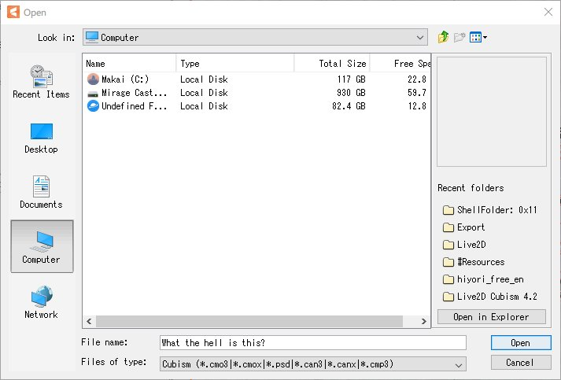"I hear you use One Commander, try this."
Proofreader Zan here, I was incorrect in one part regarding the paragraph below. There is a search feature, but they use the external Google search engine (filled with Google ads btw) to do it, which was blocked by my browser's uMatrix.
Next up, the official manual. Overall the content is pretty good at explaining things but the lack of MOBILE SUPPORT and built-in search feature is honestly difficult to navigate for a first timer. You either get used with the layout of where to find stuff or you simply don't need a manual anymore, which is more likely the latter. The lack of mobile support though, well, it's just sad honestly.
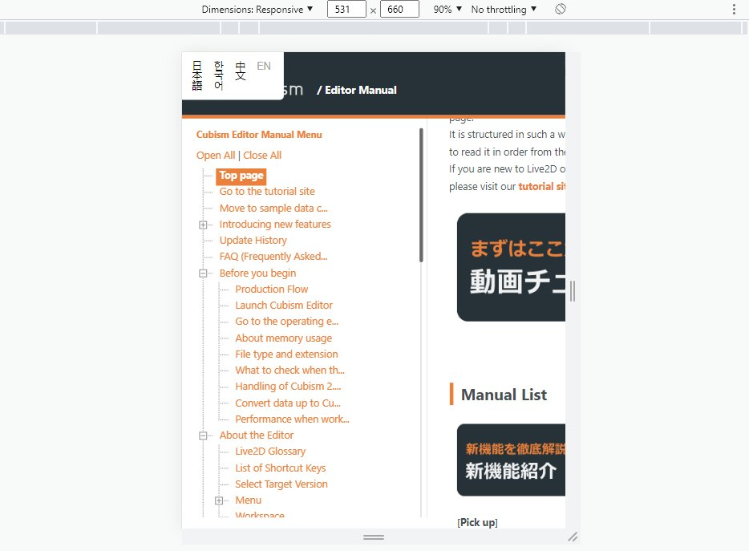POV: You are mobile user
Ok this takes too long just to write the why and reasons, so here's a list of complaints instead. Enjoy!
- #1 ranking of memory leak in succession I hade, beating a modded Minecraft at second!
- Auto backup setting for pro version only wtf (yea sure, at least the autobackup is on by default, how do you think I know that feature is enabled, eh?)
- "Please deselect the temporary deform tool" 🙂. Why don't program it to auto save and close the mode when I click other thing?
- Wait wait wait, you can cancel mesh edit but you can't cancel temporary deform? I'm lost.
- It's 2022 and you can't even switch theme to dark mode.
- Mentioned previously but, where's the unicode bro? I need muh symbols.
- Setting up canvas guide should not be this painful.
- The smaller your window size, the more button will be hidden. At least keyboard shortcut exist.
- Please tell me what keys I'm replacing in keyboard settings.
- You have search/filter feature in "Part" tab but none in "Deformer" nor "Parameter"? Nice.
- Input box in "Inspector" doesn't get automatically saved when you immediately click on other part in "Deformer" tab, wha- why?
Live2D Cubism - The Good
Weakness presentation is finished and with that aside, let's forth on to the strength. It's a decently powerful tool with a handsome amount of community generated content; tutorial, sample, and even job! Admittedly, I didn't consume the tutorial part of it since I slept on the first 1 minute of the official and user tutorial. Never that kind of person to use video for tutorials (except you Blender). The user manual is informative and the free sample is well detailed enough for me to reverse engineer in a relatively easy manner.
It also has good automation on the mesh generation, which is handy to reduce tedium in work. Model/Physic preview that I quite like and vastly customizable, great for testing and making screenshots even.
And.. that's it! Yeah it sounds like the negative overwhelm the positive mainly because I don't have other software to compare to. Live2D Cubism is still an adequate software to work with despite its flaw.
Closing
That is quite the write up. This is my first proper blog post in any shape or form, so it's quite slow to write haha. Unlike your usual journal writing with software, you have to code in all the paragraph, section, and all that jazz. This project page is finished in 2 days, not proud with that time honestly.
Anyway, thank you for reading up this far. Cheers!